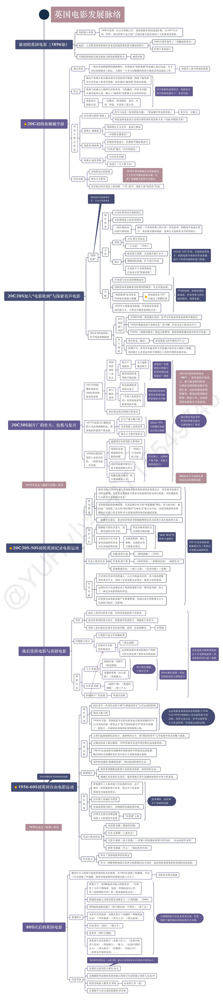
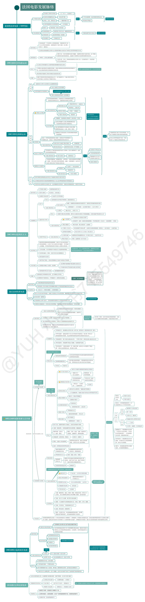
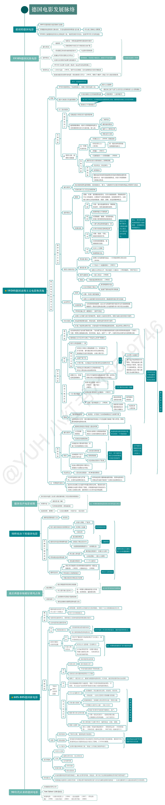
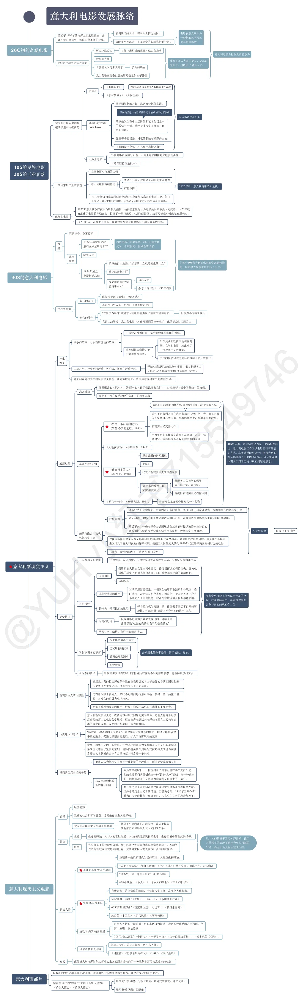
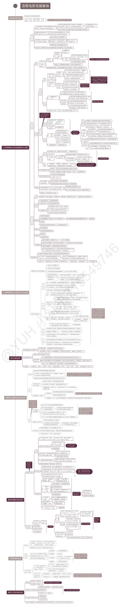
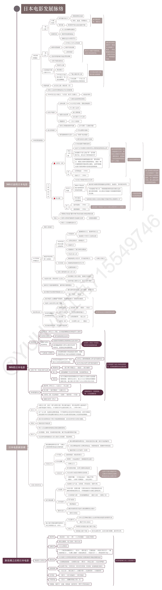

跳到正文
Skip to content
电影学习
Film Learning
中英
中文
English
中国
China
英国
United Kingdom
德国
Germany
意大利
Italy
日本
Japan
法国
France
美国
United States
苏联
Soviet Union
原始 PDF · Original PDF
各国电影发展脉络 · 7 份源 PDF（中国为研究整理脑图，无原 PDF）/ 7 source PDFs (China map researched, no source PDF)
美国电影发展脉络 · 第 1 页 / Page 1

英国电影发展脉络 · 第 1 页 / Page 1

法国电影发展脉络 · 第 1 页 / Page 1

德国电影发展脉络 · 第 1 页 / Page 1

意大利电影发展脉络 · 第 1 页 / Page 1

苏联电影发展脉络 · 第 1 页 / Page 1

日本电影发展脉络 · 第 1 页 / Page 1
请启用 JavaScript 阅读课程。 / Please enable JavaScript to read the course.